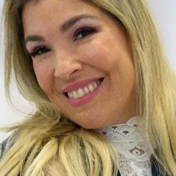

Cirurgião-dentista em Ipanema · CRO-RJ 26742
Dr. Guilherme Rothier Odontologia estética e reabilitação oral
Uma família com mais de 100 anos na odontologia brasileira, tecnologia de ponta e planejamento feito sob medida para o seu sorriso.


100 avaliações
Tratamentos
O que você quer mudar no seu sorriso?
Escolha pelo que incomoda. Na avaliação, o Dr. Guilherme monta um plano individual, pensando em saúde, função e estética ao mesmo tempo.
Quero um sorriso mais harmônico
Lentes de contato dental e facetasLentes finíssimas em porcelana ou resina corrigem forma, cor e pequenos desalinhamentos com aparência natural.
AgendarMeus dentes perderam o branco
Clareamento dentalClareamento planejado depois de avaliar a saúde dos dentes, para um resultado bonito e seguro.
AgendarTenho espaço entre os dentes
Fechamento de diastemaFechamento com resina ou lentes, devolvendo a continuidade do sorriso sem desgaste desnecessário.
AgendarPerdi um ou mais dentes
Implantes dentáriosDo implante unitário ao total, com carga imediata e All on Four: em casos indicados, você sai com dentes provisórios no mesmo dia.
AgendarQuero alinhar sem aparelho aparente
Invisalign e ortodontiaAlinhadores invisíveis ou aparelho fixo para corrigir a posição dos dentes, a mordida e a harmonia do rosto.
AgendarSinto dor em um dente
Tratamento de canal (endodontia)Remoção do nervo doente, limpeza e selamento do canal com microscópio, para salvar o dente sempre que possível.
AgendarPreciso trocar ou repor dentes
Prótese dentária e coroasPrótese fixa, removível, total ou sobre implantes, e coroas em porcelana, alumina ou zircônia.
AgendarMastigar virou um problema
Reabilitação oralUm plano completo que recupera mastigação, gengivas saudáveis e estética, devolvendo qualidade de vida e autoestima.
AgendarMinha gengiva sangra
PeriodontiaTratamento da gengiva, do ligamento e do osso que sustentam os dentes, para mantê-los firmes e saudáveis.
AgendarPreciso tirar o siso
Cirurgias odontológicasExtrações simples e complexas, sisos inclusos, correções ósseas e de gengiva, e cirurgia de freio da língua ou do lábio.
AgendarNotei uma ferida ou mancha na boca
EstomatologiaDiagnóstico de aftas, lesões e alterações da boca com a Dra. Beatriz Venturi, estomatologista da equipe.
AgendarÉ para o meu filho
Dentista para criançaAtendimento infantil em Ipanema, com prevenção e acompanhamento desde os primeiros dentes.
Agendar
Quem cuida de você
Tradição de família, olhar de hoje
O Dr. Guilherme vem de uma família que está há mais de 100 anos na odontologia brasileira. Ele acredita que o resultado do tratamento nasce da relação de confiança e seriedade construída com cada paciente, e segue em constante crescimento técnico e humano.
Minha atuação une tradição familiar na odontologia, tecnologia clínica e planejamento individualizado para oferecer tratamentos com precisão, conforto e naturalidade.
- Odontologia e Endodontia pela UFF
- Especialização em Endodontia pela APCD São Carlos
- Pós em Dentística e Estética pela UERJ
- Pós em Prótese sobre Implantes
- Pós em Cirurgia Pré-Protética pela Odontoclínica Central do Exército
- Gestão em Saúde pela FGV
- Formação em CEREC CAD/CAM na Alemanha
- Reabilitação oral com o Prof. Laerte Schenkel
Atuou no setor de prótese da Odontoclínica da Aeronáutica Santos Dumont e em clínica na Torre do Rio Sul antes de abrir a própria clínica em Ipanema. Em 2002, teve um caso clínico publicado no livro Endodontia: Conceitos Biológicos e Recursos Tecnológicos.
Tecnologia e conforto
Casos complexos resolvidos em uma única consulta
Poucas clínicas do Rio têm equipamentos tão modernos. Para quem não tem tempo de voltar ao consultório várias vezes, isso faz toda a diferença: quando há indicação, o tratamento termina no mesmo dia.
Laser LiteTouch™
Procedimentos sem anestesia, sem dor e sem o temido barulho do motorzinho.
CEREC CAD/CAM
Restaurações individuais em cerâmica feitas na hora, com excelência e segurança em apenas uma consulta.
Câmera intraoral
Você vê os próprios dentes durante o exame e entende cada etapa do planejamento.
Radiografia digital
Imagem processada e arquivada automaticamente em poucos segundos.
Microscópio
Visão rica em detalhes para tratamentos de canal e restaurações mais precisas.
Laboratório no prédio
Laboratório de prótese RTCad no mesmo edifício, com impressora 3D, para mais agilidade e precisão.
Primeira consulta
Como começa o seu tratamento
Cada paciente recebe uma avaliação individual, com foco em saúde, estética, função, conforto e previsibilidade.
Avaliação
Você conta o que incomoda e o que espera. O exame usa câmera intraoral e radiografia digital, e você acompanha tudo na tela.
Planejamento personalizado
O Dr. Guilherme explica as opções, a ordem do tratamento e o tempo de cada etapa, sem termos difíceis.
Tratamento com agilidade
Com o CEREC, o laser e o laboratório no prédio, muitas etapas acontecem no mesmo dia, poupando idas ao consultório.
Equipe
Especialistas trabalhando juntos
A clínica é coordenada pelo Dr. Guilherme e reúne cirurgiões-dentistas especializados para cuidar do sorriso de forma integrada.

Dr. Guilherme Rothier
Cirurgião-dentista · CRO-RJ 26742
Especialista em Dentística, pós-graduado em Estética pela UERJ e formado em Endodontia pela UFF. Atua em odontologia estética, reabilitação oral, prótese e endodontia, e coordena o planejamento de cada caso.

Dra. Beatriz Venturi
Estomatologista · CRO-RJ 25916
Graduada e especialista em Estomatologia pela UFRJ, com mestrado em Patologia Bucodental pela UFF. Atua em diagnóstico de lesões bucais, laserterapia e odontologia hospitalar.
A equipe conta também com especialistas em Implantodontia, Ortodontia e Periodontia.
English speaking dentist
Atendimento em inglês e para quem vem de longe
Pacientes de outras cidades e do exterior encontram aqui um tratamento planejado para caber no tempo da viagem.
- Consultas em português e inglês
- Laboratório próprio no prédio, que encurta prazos de próteses e lentes
- Casos selecionados concluídos em uma única visita, com CEREC
- Localização fácil, em frente ao metrô, perto de Leblon e Copacabana

Pacientes
Nota 4,9 no Google, com mais de 100 avaliações
O Dr. Guilherme Rothier é um profissional muito atencioso e competente, me deixou muito segura com o tratamento. O laboratório da clínica também é incrível, com equipamentos super modernos e uma impressora 3D. Recomendadíssimo.
Melhor dentista do Rio de Janeiro e quiçá do Brasil. Equipamentos de primeira linha, profissionais dedicados, pensando sempre no melhor atendimento ao cliente! Isso faz total diferença!
O tratamento dói?
Com o laser LiteTouch™, vários procedimentos são feitos sem anestesia, sem dor e sem o barulho do motorzinho. Na avaliação você descobre se o seu caso pode ser feito assim.
Dá mesmo para resolver em uma consulta?
Em casos selecionados, sim. O sistema CEREC produz restaurações em cerâmica na hora, e o laboratório no prédio agiliza próteses e lentes.
Posso sair com dente no mesmo dia do implante?
Quando há indicação clínica, sim: com a carga imediata você sai com dentes provisórios no dia da cirurgia, até a troca pelos definitivos.
Qual a diferença entre lente e faceta?
As duas cobrem a frente do dente. A lente é bem mais fina e costuma exigir pouco ou nenhum desgaste. A indicação certa depende do seu sorriso.
Atendem em inglês?
Sim. A clínica recebe pacientes estrangeiros e brasileiros que moram fora, com atendimento em inglês.
Tem estacionamento?
Sim. Ao agendar sua consulta, você pode usar as vagas na garagem do Edifício Quartier Ipanema.
Qual o horário de atendimento?
De segunda a sexta, das 8h às 20h. Fins de semana e feriados, a clínica fica fechada.
Agende sua consulta
Em Ipanema, em frente ao metrô
Fale pelo WhatsApp ou por telefone. A equipe orienta o agendamento da sua avaliação.
- (21) 96899-2262
- Telefone
- (21) 2295-7744
- Endereço
- Rua Visconde de Pirajá, 414, salas 908 e 909
Edifício Quartier, Ipanema, Rio de Janeiro - Horário
- Segunda a sexta, das 8h às 20h